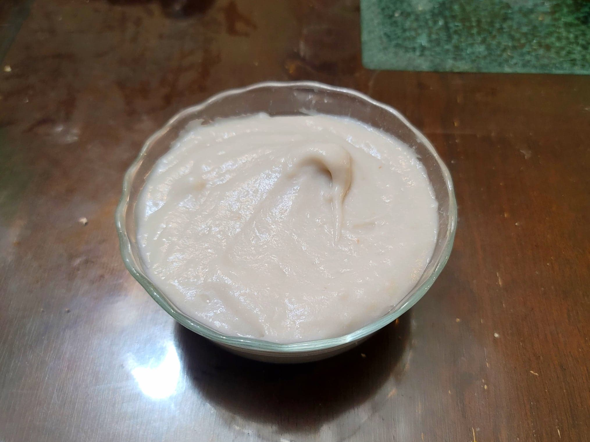

Poi

Ingredients:
- 1 1/2 lb Taro, small variety, not peeled or cut
- Water, as needed
Instructions:
- Bring a pot of water to a boil. Then add in the taro, making sure that they are submerged. Let boil, covered, for 15-20 minutes or until fork tender.
- Remove the taro from the pot and peel. Place the taro into a stand mixer with the paddle attachment. Run the stand mixer on the lowest setting until it is completely mashed. Then raise to medium/high speed to remove most of the lumps.
- Once most of the lumps have been removed, set the mixer to medium and begin to slowly incorporate water into the mix. Add 1-2 tbsp water at a time and wait until fully incorporated before adding more. Continue to add water until the poi reaches a desired preference, preferably a two finger poi consistency.
- Serve at room temperature.